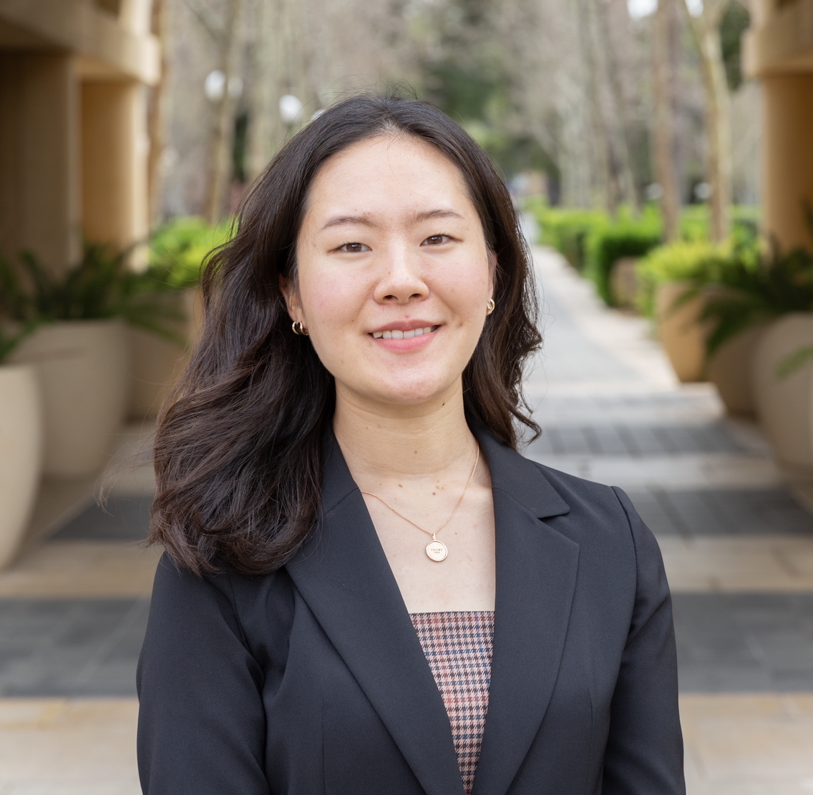
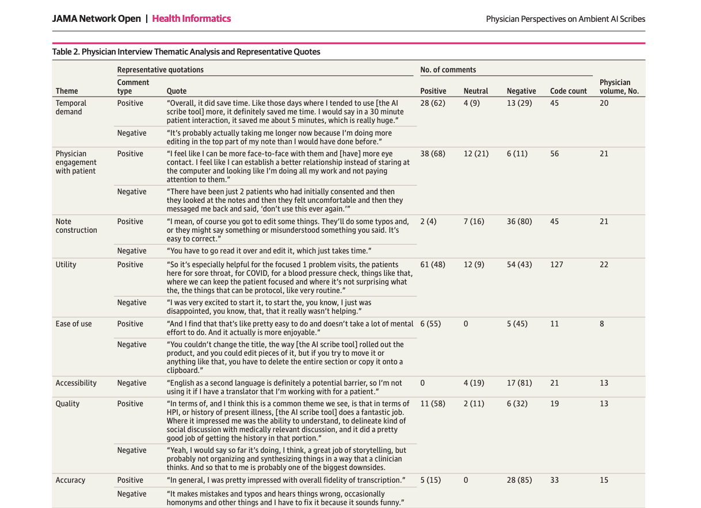
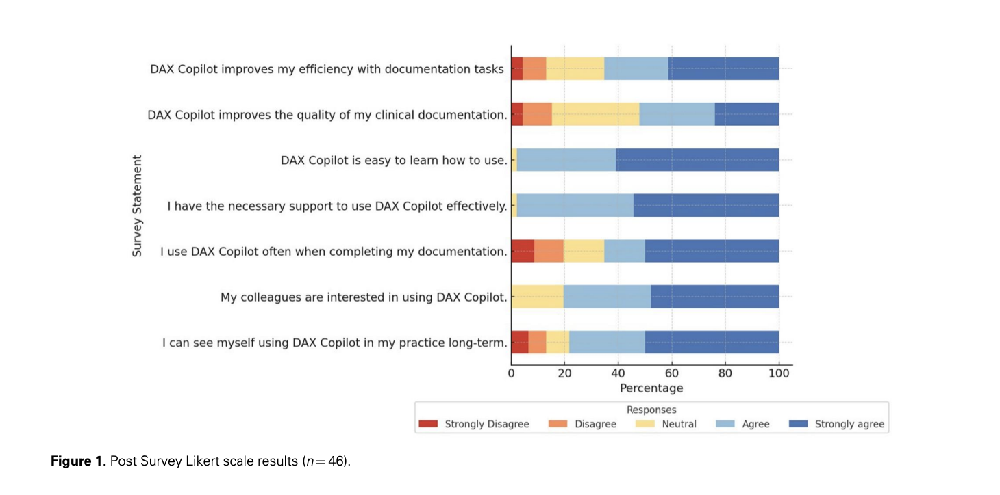
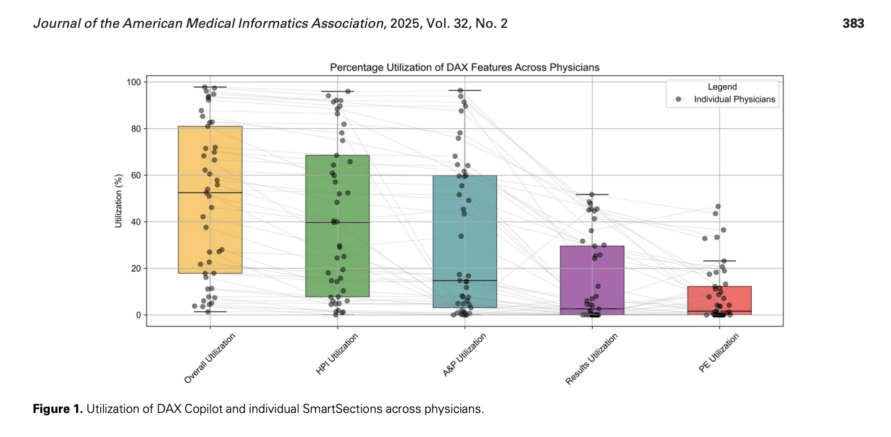
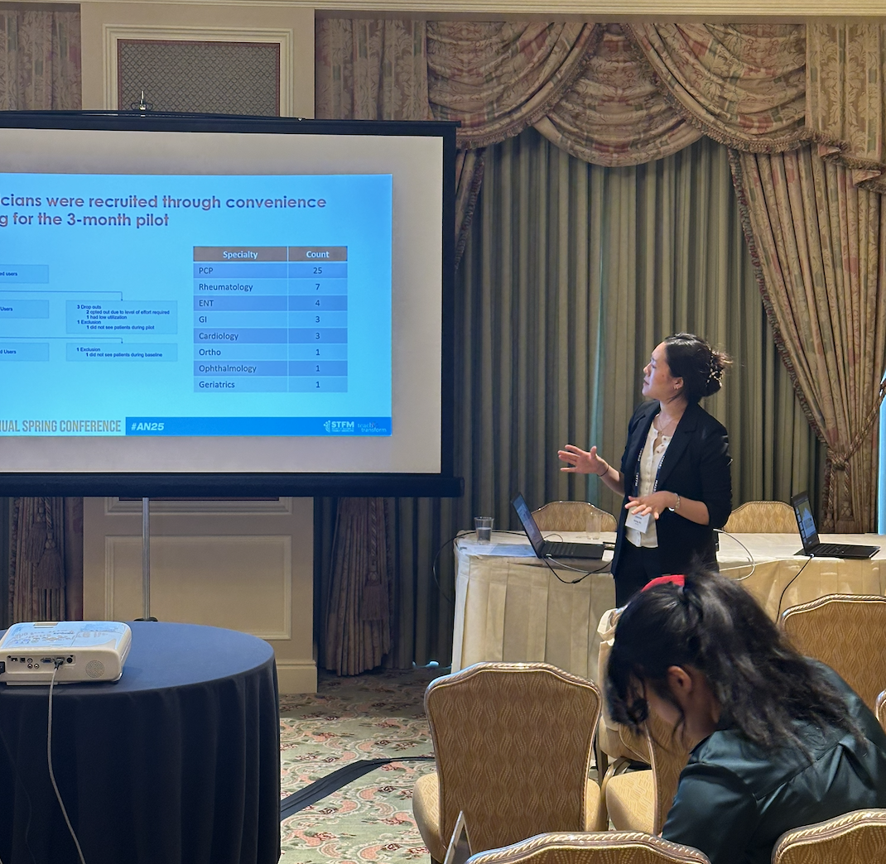
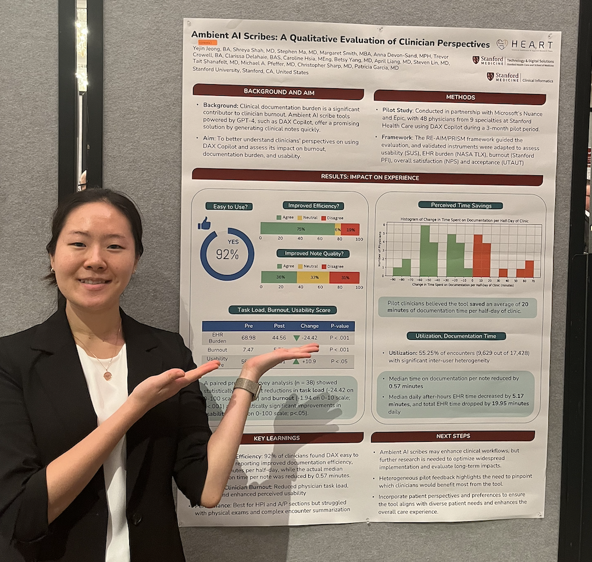
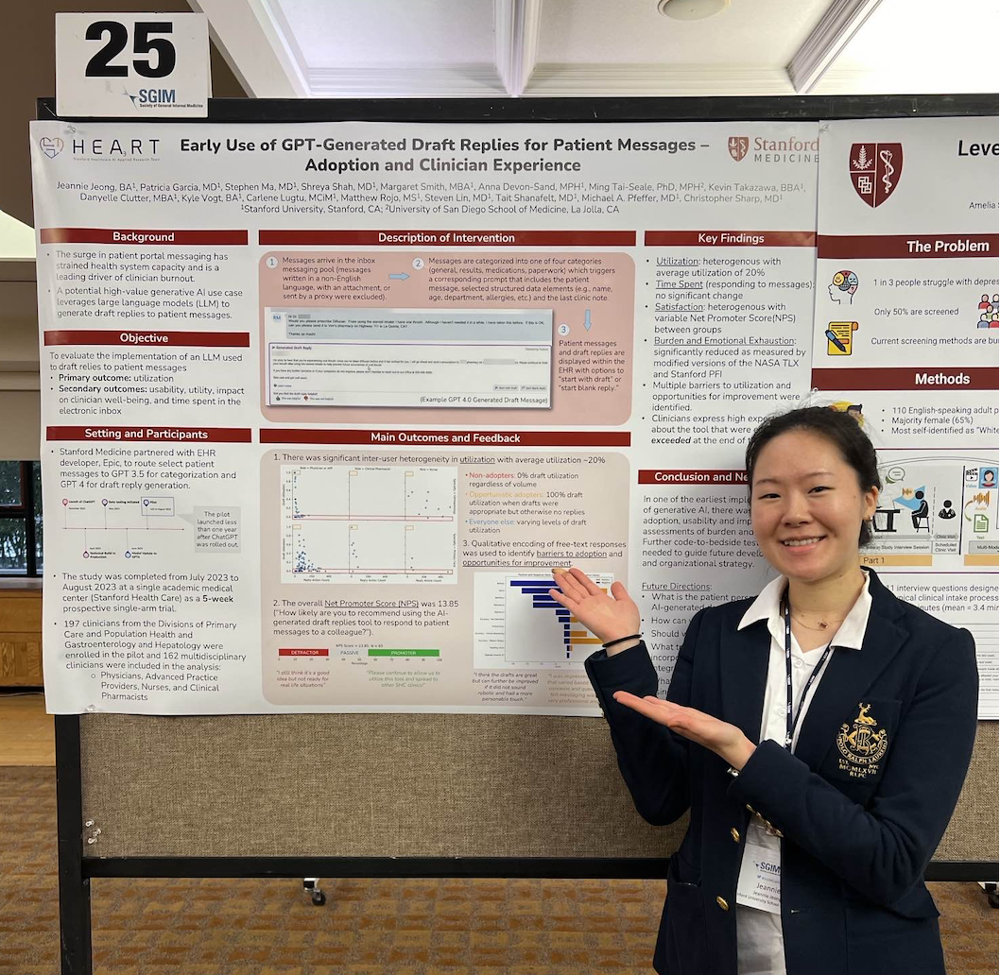
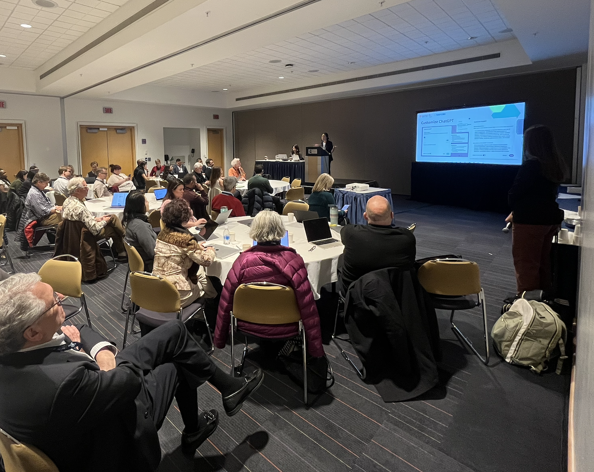
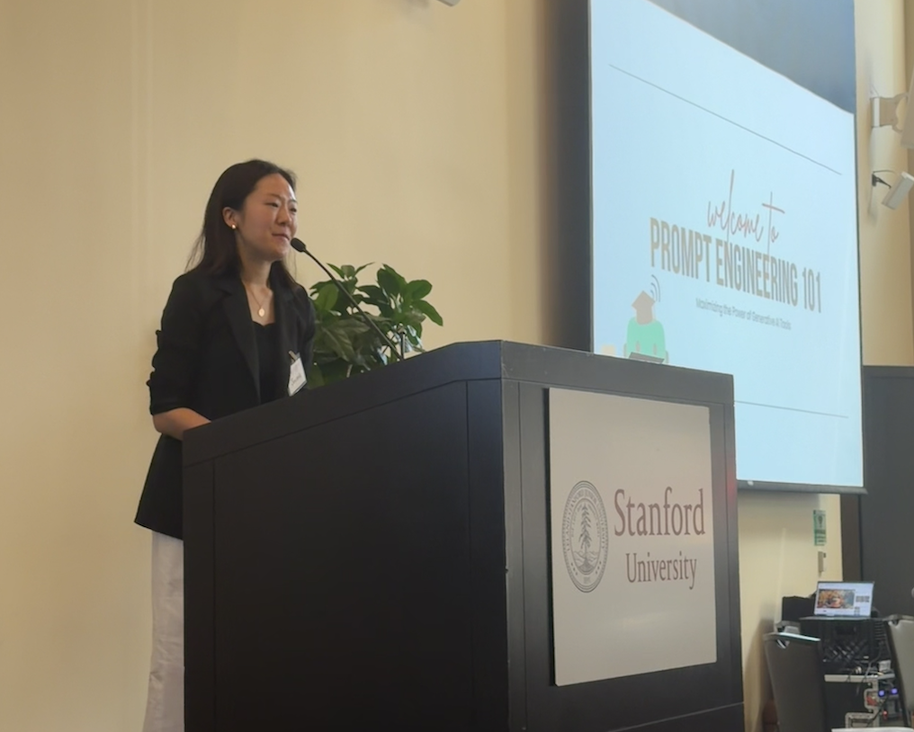
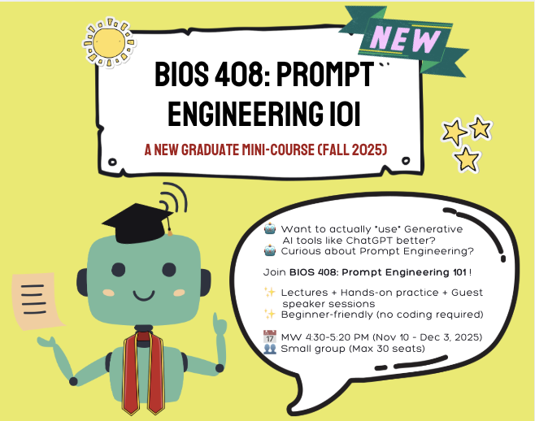

|
Yejin "Jeannie" Jeong Hello!👋 I'm a researcher at the Stanford Healthcare AI Applied Research Team (HEA3RT), where I support the implementation and evaluation of AI technologies in clinical settings. I'm completing an M.S. in Clinical Informatics Management at Stanford Medicine, and hold a B.A. in Psychology and Cognitive Science from Vanderbilt University. I'm passionate about bridging healthcare, AI, and human-centered learning and design, with recent interests in the research and education of prompt engineering. |
 |
{kind=link}
Publications |
|  |
Physician Perspectives on Ambient AI Scribes
Shreya J Shah, Trevor Crowell, Yejin Jeong*, Anna Devon-Sand, Margaret Smith, Betsy Yang, Stephen P Ma, April S Liang, Clarissa Delahaie, Caroline Hsia, Tait Shanafelt, Michael A Pfeffer, Christopher Sharp, Steven Lin, Patricia Garcia JAMA Network Open, 2025 Interviews with 22 physicians highlighted how ambient AI scribes may improve workload, work–life integration, and patient engagement, while revealing barriers and opportunities for adoption. |
|  |
Ambient artificial intelligence scribes: physician burnout and perspectives on usability and documentation burden
Shreya J Shah, Anna Devon-Sand, Stephen P Ma, Yejin Jeong, Trevor Crowell, Margaret Smith, April S Liang, Clarissa Delahaie, Caroline Hsia, Tait Shanafelt, Michael A Pfeffer, Christopher Sharp, Steven Lin, Patricia Garcia Journal of the American Medical Informatics Association (JAMIA), 2025 In a 3-month pilot with 48 physicians, an ambient AI scribe (DAX Copilot) was associated with reduced task load and burnout, and improved usability and documentation efficiency. |
|  |
Ambient artificial intelligence scribes: utilization and impact on documentation time
Stephen P Ma, April S Liang, Shreya J Shah, Margaret Smith, Yejin Jeong, Anna Devon-Sand, Trevor Crowell, Clarissa Delahaie, Caroline Hsia, Steven Lin, Tait Shanafelt, Michael A Pfeffer, Christopher Sharp, Patricia Garcia Journal of the American Medical Informatics Association (JAMIA), 2025 Used in 55% of 17,428 encounters across 45 physicians, an ambient AI scribe was associated with reduced documentation and EHR time, suggesting potential to lessen documentation burden. |
|
Artificial Intelligence–Generated Draft Replies to Patient Inbox Messages
Patricia Garcia, Stephen P Ma, Shreya Shah, Margaret Smith, Yejin Jeong, Anna Devon-Sand, Ming Tai-Seale, Kevin Takazawa, Danyelle Clutter, Kyle Vogt, Carlene Lugtu, Matthew Rojo, Steven Lin, Tait Shanafelt, Michael A Pfeffer, Christopher Sharp JAMA Network Open, 2025 In a 5-week pilot with 162 clinicians, an electronic inbox LLM that generated draft replies to patient messages achieved 20% utilization and was associated with reduced burden and burnout. |
|
|
Building Pandemic-Resilient Primary Care Systems: Lessons Learned From COVID-19
Yejin Jeong, Trevor Crowell, Anna Devon-Sand, Theadora Sakata, Amelia Sattler, Shreya Shah, Timothy Tsai, Steven Lin Journal of Medical Internet Research (JMIR), 2024 Presents three key lessons from the COVID-19 pandemic to guide the development of more resilient, equitable, and hybrid primary care systems in the post-pandemic era. |
Selected Presentations |
|  |
Evaluating Ambient AI Scribes through Quantitative and Qualitative Approaches
Yejin Jeong (oral presentation) 2025 STFM Annual Spring Conference — Presented May 2025. |

|
Using AI for Detecting Clinical Deterioration: Insights and Responses from the Care Team
Yejin Jeong, Margaret Smith, Robert Gallo, Jerri Westphal, Aubrey Florom-Smith, Lisa Knowlton, Steven Lin, Lisa Shieh 52nd NAPCRG Annual Meeting — Presented November 2024. View poster |
|  |
Ambient AI Scribes: A Qualitative Evaluation of Clinician Perspectives
Yejin Jeong, Shreya Shah, Stephen Ma, Margaret Smith, Anna Devon-Sand, Trevor Crowell, Clarissa Delahaie, Caroline Hsia, Betsy Yang, April Liang, Steven Lin, Tait Shanafelt, Michael A. Pfeffer, Christopher Sharp, Patricia Garcia AMIA 2024 Annual Symposium — Presented November 2024. View poster |
|  |
Early Use of GPT-Generated Draft Replies for Patient Messages — Adoption and Clinician Experience
Yejin Jeong, Patricia Garcia, Stephen Ma, Shreya Shah, Margaret Smith, Anna Devon-Sand, Ming Tai-Seale, Kevin Takazawa, Danyelle Clutter, Kyle Vogt, Carlene Lugtu, Matthew Rojo, Steven Lin, Tait Shanafelt, Michael A. Pfeffer, Christopher Sharp 2024 SGMI CA-HI Regional Meeting — Presented February 2024. View poster |
Teaching & WorkshopsSince early 2024, I’ve been designing and leading prompt engineering sessions for clinicians, educators, and learners, helping them engage with large language models in more intuitive and effective ways. Below are teaching engagements and workshops I’ve delivered. |
|  |
Prompt Engineering 101
52nd NAPCRG Annual Meeting — Delievered November 2024.
Designed and led the Prompt Engineering 101 session as part of our team’s
Artificial Intelligence and Machine Learning Bootcamp 2.0
for Primary Care Clinicians and Researchers (~70 attendees).
|

|
Prompt Engineering 101
2025 STFM Annual Spring Conference — Delievered May 2025.
Designed and led the Prompt Engineering 101 session as part of our team’s
Generative AI Bootcamp
for Family Medicine Clinician Educators, Scholars, and Learners (~90 attendees).
|
|  |
Prompt Engineering 101
2025 Stanford PCPH Faculty Retreat — Delievered October 2025.
Invited presentation for ~150 faculty members in the Division of Primary Care & Population Health at Stanford Medicine,
introducing prompt techniques and frameworks.
|
|  |
BIOS 408: Prompt Engineering 101 (Fall 2025)
Graduate Student Instructor & Course Designer
Designed and will deliver Stanford’s first mini-course dedicated to prompt engineering —
hosted by Stanford Biosciences and developed under faculty sponsorship.
|
|
Design and source code from Jon Barron's website. |